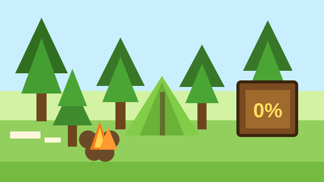
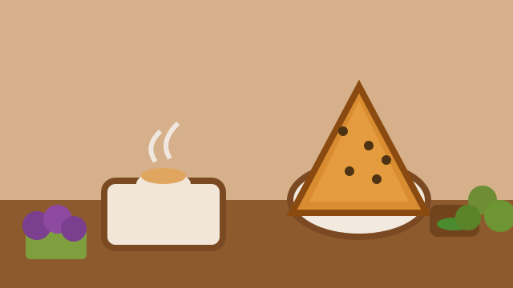

Под 0% хоть в лесу
Первый займ под 0%, займы онлайн и предложения для новых клиентов.
Перейти ›
На большую колбасу
Быстрые займы на повседневные расходы и удобный подбор микрозаймов.
Перейти ›
На капучино и самсу
Небольшие займы онлайн на карту для ежедневных потребностей.
Перейти ›